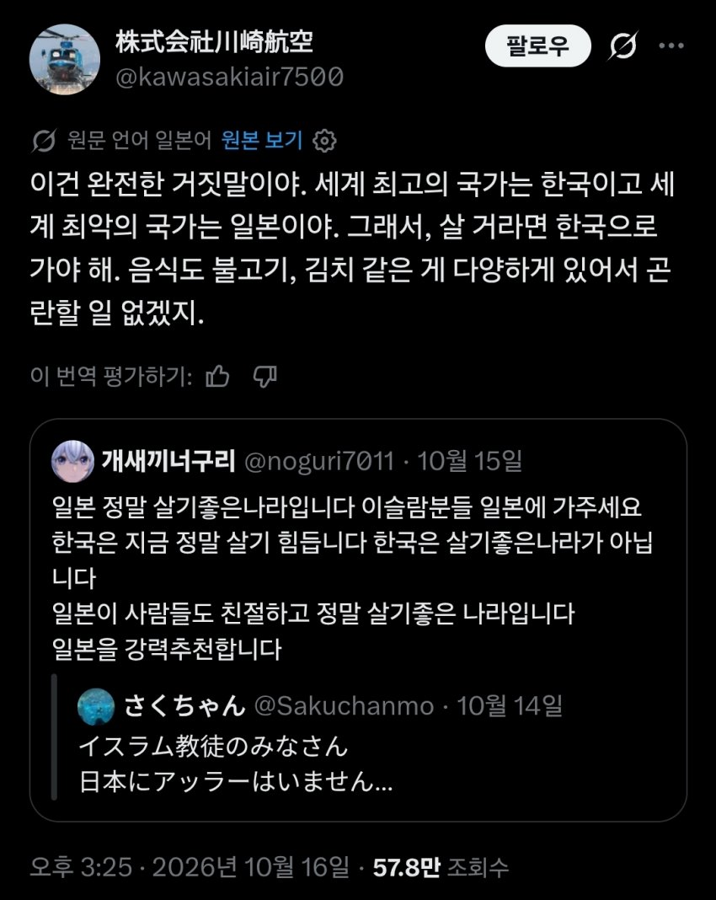
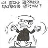

싱글벙글 폭탄돌리기
댓글
근데 이상하게 이슬람쪽은 아시아안오네 못오는건가?
동남아는 이슬람 많을껄?
생각보다 많이 옴
알카에다 얘네도 한국 테러 하러 온 적도 있음
아 걔네? 여권뺏기고 사장한테 맞다가 울면서 돌아간애들?
비자가 안나와서 단체관광이 힘들다네요
일본쪽으로 존나 많이 와서 길 한복판에 막고 메카에다 절한다고 차랑 사람도 못다니고 개판이라는데.
우리나라도 김해에서 한번 그지랄 했었지.
멀다... 동북아는 이민에 대한 장벽도 높고
중국은 신장위구르가 이슬람지역이라 이미 있고
일본은 이미 꽤많이 들어감
우리나라는 북한땜에 안받아도 되고
멀어서. 난민이 무슨 교통비가 있어서 멀리 있는 나라에 가겠어.
노동자로는 동남아쪽 이슬람신자들이 좀 오긴하는데, 외국인 노동자도 중국인이 워낙 많아서 비율상으론 좀 밀림.
어짜피 울나라는 북괴놈들때문에 난민 안받아도됨 ㅋㅋㅋㅋ

꺼져!
우리는 중국인만으로도 족해..